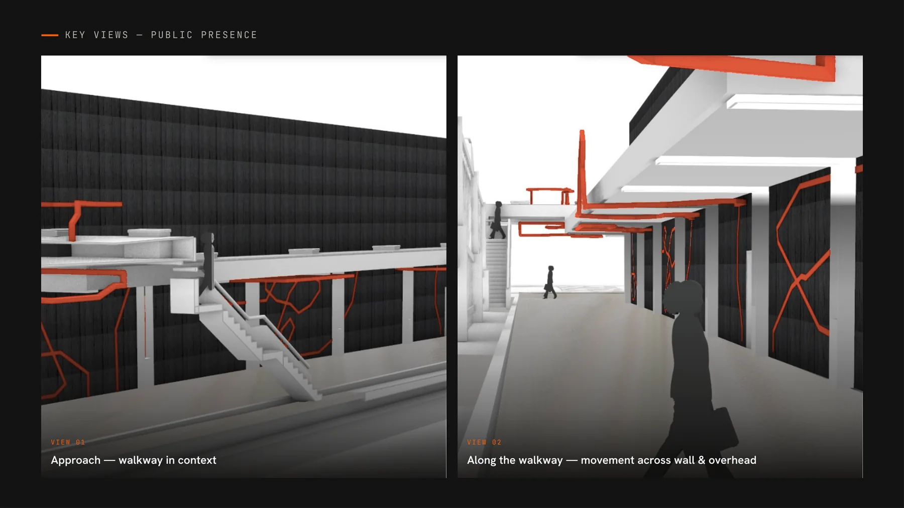
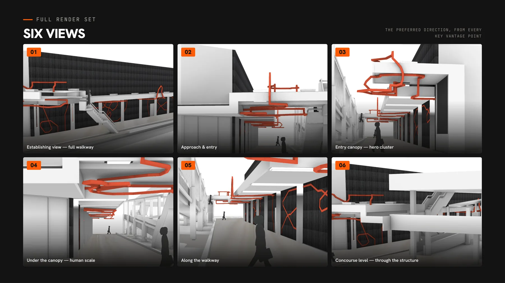

01
Public art / City of Coffs Harbour / 2026
reVITALise
Turning an artist’s looping visual language into a buildable public-art system for a constrained pedestrian walkway.

My role
Design development, buildability, fabrication planning, stakeholder coordination and Stage 1 delivery through Trade Arts.
Working with
Artist Belem Lett and the City of Coffs Harbour.
Status
The commissioned Stage 1 scope was completed and delivered. The City subsequently deferred construction.
